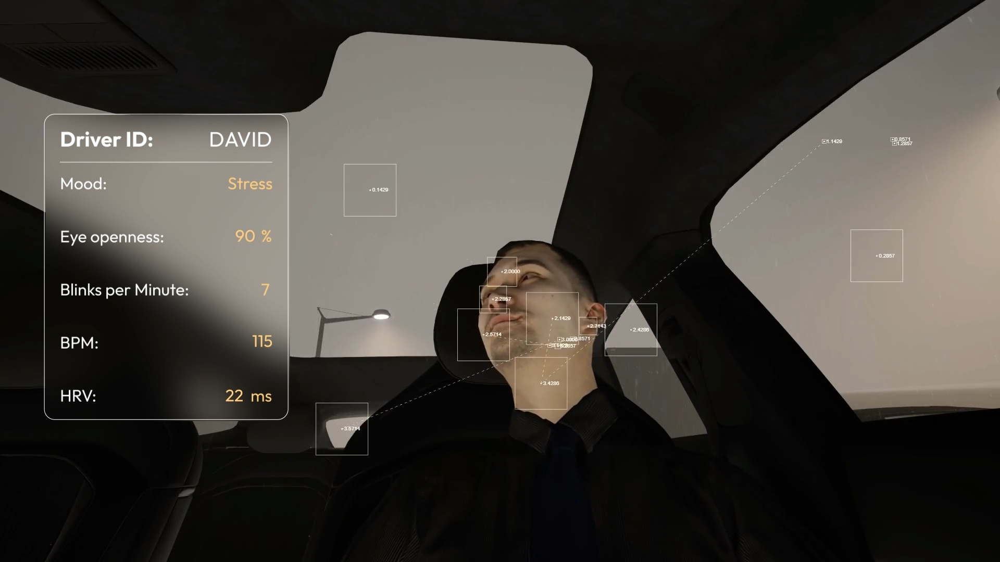
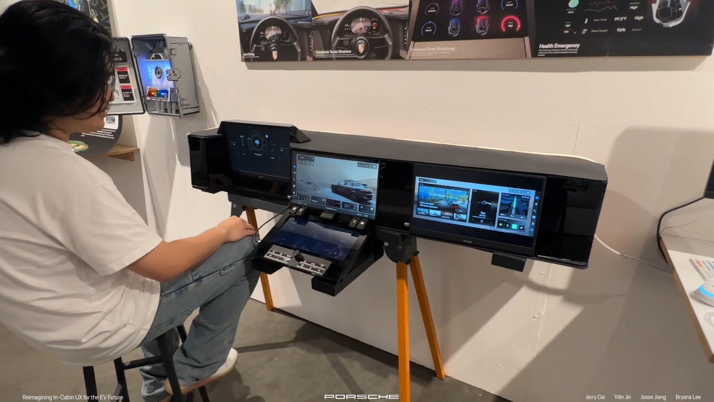
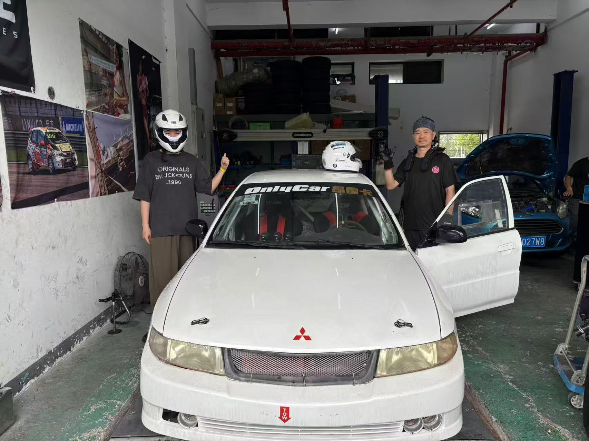
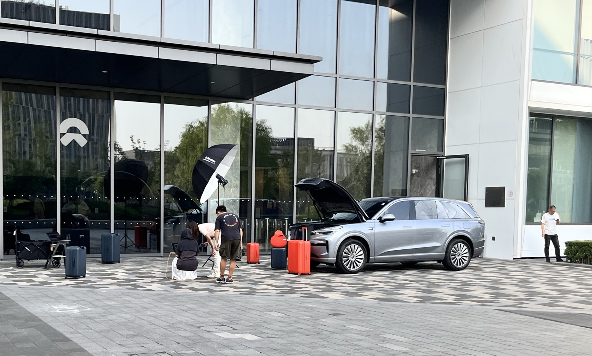

ArtCenter, IXD, 8
“Finding a Path in Interaction Design”
Exploring an Interaction Design student’s journey through technology, creativity, and cross-disciplinary projects at ArtCenter.
Interviewed by Selina
Why did you decide to study at ArtCenter?
I came to ArtCenter mainly because of the pandemic situation at the time. I really liked technology combined with design, but I didn’t want to study pure computer science—I preferred a more creative direction. Since I was looking in California, I found ArtCenter, and it felt like a good fit.
Before choosing Interaction Design, did you consider other majors? What ultimately made you decide on IxD?
Yes, I did consider other majors. When I applied, I applied for both Interaction Design and Industrial Design. Later, I realized I wasn’t very interested in Industrial Design—one reason was that my sketching skills weren’t strong enough. So, I ultimately decided on Interaction Design.
What’s your favorite gallery/museum in Los Angeles?
My favorite museum is The Broad in downtown LA. I like modern art, and I’ve also seen a Takashi Murakami exhibition there, which I found really interesting.
What was the most important class you took at ArtCenter so far?
The most important class for me was HCI. I learned a lot from it, including prototyping, basic HCI knowledge, designing a voice assistant, and quickly preparing presentations. All of these skills have been very practical and useful.
What projects are you working on right now?
Right now, I’m busy with my graduation exhibition. I also took an AI class, and we’re planning to make an AI agent—possibly related to robotaxi or autonomous vehicles—but the concept isn’t finalized yet. Besides that, most of my focus is on the graduation exhibition.
If you could go back to your 1st term, what would you do differently?
I would focus more on improving my sketching skills. A good sketching ability is really helpful in teamwork or industry projects because it allows you to quickly communicate ideas and support your team. Having this skill is practical in many situations.
Do you feel ArtCenter has prepared you well for the industry? Which experiences were the most practical or relevant?
Yes, I think ArtCenter has prepared me well. The projects are diverse and cover almost every industry, which is great if you’re willing to take initiative. The classes are practical and teach a wide range of skills. They also keep up with trends—like vibecoding—which helps you stay current. Overall, the experience is very useful for entering the industry.
"
ArtCenter has prepared me well: projects are diverse, classes are practical, and they keep up with trends like vibecoding.
"


What advice would you give to students who are in IxD?
After finishing each project, don’t just let it sit there. If possible, refine it in later classes or apply new knowledge to improve it. Iteratively polishing your projects will make them much stronger than doing them just once.
Have you had any internships so far? If so, what was the most important thing you learned from that experience?
Yes, I’ve had an internship, but it wasn’t a design role. I worked as a product manager in the new energy vehicle industry. This role required interdisciplinary collaboration and a wide range of skills. ArtCenter helped me by giving me knowledge in animation, graphic design, basic product design, and more, which was really practical in such a collaborative environment. The most important thing I learned was communication skills—how to present your ideas, negotiate with different teams, and collaborate effectively. Especially communicating with leaders and other departments was key, along with applying research and user experience insights in real-world scenarios.
"
The most important thing I learned was communication—how to present ideas, negotiate with teams, and collaborate effectively.
"


What career path are you currently aiming for?
While the interviewee didn’t state a specific career title, based on my current projects and internship experience, I'm aiming for a career that involves cross-disciplinary collaboration in technology and design, particularly in areas like product management, user experience, and AI-related design.
The End